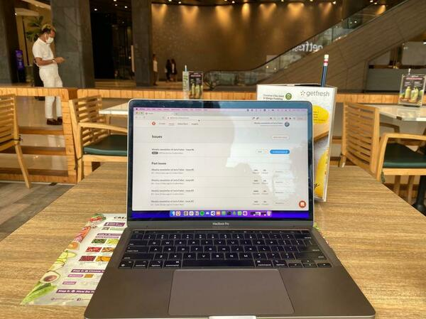

Newsletter #6
This newsletter was originally published on the Revue platform, which Twitter (now X) killed after being taken over by Elon Musk. I now republish it here. My latest newsletters are on Convertkit.
Last week I launched on Product Hunt and Hackernews.
My expectations were low. I’ve build this a year ago, for myself, and it’s very much a niche product.
So why did I post it?
I realised I have to build a brand, put myself out there, become a marketeer, a sales, all together: an entrepreneur.
Hence this newsletter
Hence launching my product
What I learned is that it’s addictive.
Even if the results aren’t that impressive.
It’s addictive to put yourself out there. Get comments from real people, upvotes from people I’ve never heard about, getting 113 people who visited my website…
I feel I have momentum now, and I have to keep it. Build more small projects. Launch every month.
I already built a small app to learn Italian. But I can do better!
And while I’m at it:
- get a mentor
- meet other builders in a local community
- take a weekend of me-time elsewhere to build build build hackathon style
- outsource more
- keep my peak energy momentum!
With that, I wish you a peak energy week from the GetFresh in the Singha Complex BKK.
PS My peak energy might have been a confluence of launching and listening to Tony Robbins about peak states. In short: When do you feel best? When you’re in a peak state obviously. So why do I not just put myself in a peak state all the time?
